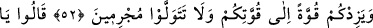

HÛD (A.S.) VE ÂD KAVMİ
50. Âd kavmine de kardeşleri Hûd’u (gönderdik). Dedi ki: “Ey kavmim, Allah ’a
kulluk edin. Sizin O’ndan başka tanrınız yoktur. Siz, yalan uyduranlardan başkası
değilsiniz.”
51. “Ey kavmim, ben sizden bunun için bir ücret istemiyorum. Benim ücretim beni
yaratana aittir. Aklınızı kullanıyor musunuz!”
52. “Ey kavmim Rabb’inizden mağfiret dileyin, sonra da O’na tevbe edin ki,
gökten üzerinize bol bol rahmet göndersin, kuvvetinize kuvvet katsın. Günah
işleyerek yüz çevirmeyin.”
53. “Dediler ki: “Ey Hud, sen bize açık bir mucize getirmedin. Biz senin sözünle
tanrılarımızı terk edecek değiliz. Sana inanacak da değiliz.”